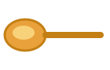

Adag 2
Idő 10 perc+ 30 perc hűtő
Technika hideg
Hozzávalók
Elkészítés
Az avokádót a kakaóval, a mézzel, a szójaitallal, a sóval és a vaníliával botmixerrel vagy aprítóban teljesen simára dolgozod, itt nem szabad félúton megállni, a selymes állag ettől lesz.
Ha túl tömör, kanalanként még egy kevés szójaital.
Pohárba kanalazod, 30 perc hűtő, és a magot a tetejére szórod.

Jegyzet. az avokádó íze nem érződik rajta, csak az állagot adja, ez a legegyszerűbb tejszínmentes csokikrém. Címke: a kakaópor legyen cukrozatlan, 100 % kakaó. A vaníliakivonat alkoholbázisú, az alkohol pedig erjesztéssel készül, ezért itt őrölt vaníliarúd vagy vaníliás cukor van helyette. Hűtőben 2 napig jó, de a második napon már kevésbé szép a színe.